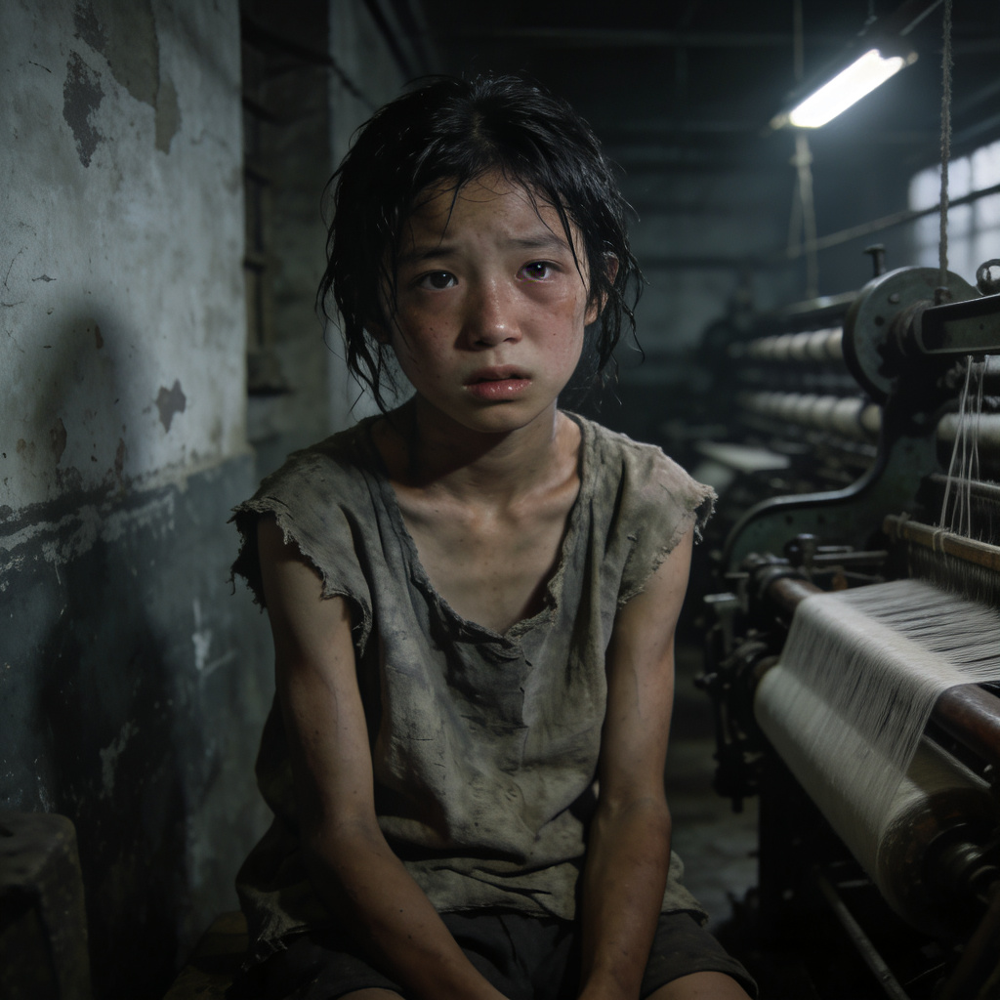

谁能拯救芦柴棒？
在夏衍的报告文学《包身工》中，"芦柴棒"是一个十五六岁的包身工女孩，她手脚瘦得像芦柴梗一样，因此大家就拿"芦柴棒"当了她的名字。她每天在上海东洋纱厂工作12小时以上，居住在七尺阔十二尺深的工房里，与16-17人挤住在一起，人均不足0.6平方米。她的饮食只有两粥一饭（豆腐渣稀粥+烂菜叶），日薪仅三角八分（仅为普通工人的1/3）。她是被从苏北、浙东贫困农村诱骗出来的少女，签订了"包身契"，失去了人身自由。
今天，我们将探讨一个问题：当"芦柴棒"向不同文学作品中的女性人物求救时，谁能够真正拯救她？

小芹的回应
小芹看着芦柴棒瘦骨嶙峋的样子，眼中充满了同情。她紧紧握住芦柴棒的手，说："闺女，你太可怜了。我能理解你的痛苦，因为我也曾经被封建势力压迫过。"
然而，当芦柴棒请求小芹帮助她逃离纱厂时，小芹却陷入了沉默。她知道，自己虽然在争取婚姻自由的斗争中取得了胜利，但那主要是依靠新政府的支持。面对包身工制度这样复杂的社会问题，她感到力不从心。
"我...我很想帮你，"小芹犹豫地说，"但是我没有钱，也没有门路。就算我能帮你逃出来，你又能去哪里呢？没有身份证明，没有谋生技能，你可能会饿死街头。"
小芹的善良和同情是真诚的，但她缺乏解决社会问题的正确方法和领导。她无法从根本上改变芦柴棒的命运，因为她自己也还在学习如何在新社会中生活。
结论：小芹不能拯救芦柴棒。虽然她有朴素的善恶观，对包身工有同情，但是缺乏正确的方法和领导，也无法解决救出芦柴棒后她的生存问题。
水生嫂的回应
水生嫂上下打量着芦柴棒，她的眼神中既有同情，也有审视。作为经历过战争洗礼的妇女，她已经不再是当年那个只会在家织席的普通农妇了。
"闺女，你受的苦我能明白，"水生嫂说，"但是要逃出这个魔窟，不是一件简单的事。你有什么打算吗？"
芦柴棒摇了摇头，她只知道自己不想再过这种非人的生活，但根本不知道该如何改变。
水生嫂思考了一会儿，说："如果你真的想逃，我可以试着联系一些可靠的乡亲，帮你找个落脚的地方。但是，这只能救你一个人。要想救更多像你这样的姐妹，必须从根本上推翻这个吃人的制度。"
水生嫂的话让芦柴棒似懂非懂。她知道水生嫂是真心想帮她，但她不确定这条路是否真的能走通。
结论：水生嫂不一定能拯救芦柴棒。前期的水生嫂是农民，有一腔热情但是缺乏科学的行动指南；后期的水生嫂成长为游击队员，可能在乡亲的帮助下救出芦柴棒，但是无法拯救千万个包身工。
刘和珍的回应
刘和珍看着芦柴棒，眼中燃起了愤怒的火焰。她握紧拳头，说："这是何等的黑暗！资本家和封建势力勾结在一起，肆意践踏底层人民的尊严和生命！"
她当即表示要为芦柴棒奔走呼号，联系进步学生和爱国人士，揭露包身工制度的罪恶。然而，在那个军阀混战、白色恐怖笼罩的年代，她的呐喊虽然能唤起一部分人的觉醒，却无法撼动反动势力的根基。
"我会尽我所能帮助你，"刘和珍坚定地说，"但单凭我们的一腔热血，恐怕难以彻底改变这一切。我们需要更强大的力量，需要组织，需要千千万万被压迫者的团结！"
结论：刘和珍不能拯救芦柴棒。她有坚定的信仰和反抗精神，能揭露黑暗却缺乏有力的组织和革命力量，无法从根本上推翻包身工制度。
黄新的回应
黄新仔细听完芦柴棒的哭诉，没有过多的同情之语，而是冷静地分析道："你的苦难不是个人的不幸，而是整个旧中国底层妇女的缩影。要摆脱这种命运，不能只靠个人的逃离，必须推翻这个吃人的制度！"
她告诉芦柴棒，自己所在的党组织正在秘密发动工人运动，号召包身工们团结起来反抗压迫。她给芦柴棒讲革命的道理，教她如何联系身边的姐妹，如何保存力量，等待时机。
"我不能只救你一个人，"黄新说，"我们要救的是所有像你一样被压迫的姐妹。党会指引我们方向，组织会给我们力量。只要我们跟着党走，团结起来，就一定能砸碎这万恶的包身工制度！"
结论：只有黄新能真正拯救芦柴棒。她作为共产党员，有坚定的信仰、科学的方法和组织的力量，不仅能解救个体，更能从根本上推翻压迫制度，拯救千万个"芦柴棒"。